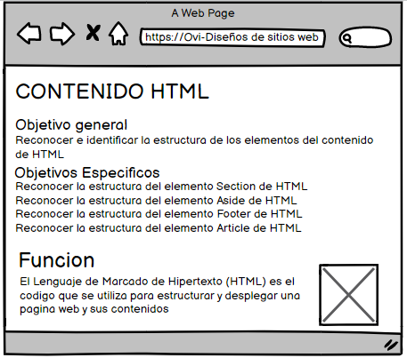

CONTENIDO HTML
Lenguajes de programacion HTML y CSS
- Has oido hablar de HTML y CSS, contiene esto que ver con el funcionamiento de sitios web? Por Vsupuesto! Estos son los lenguajes de programacion que permiten crear sitios web. Todos los sitios web se basan en estos lenguajes, que son la base de los sitios de internet. HTML fue inventado por Tim Berners-Lee en 1991, quien todavia sigue de cerca la evolucion de la Web. Creo el World Wide Web Consortium (W3C), que define las nuevas versiones de internet relacionadas con los.lenguajes de programacion Tambien ha creado mas recientemente, la Fundacion World Wide Web, que hace el seguimiento y analisis de la evolucion de la Web.
HTML y CSS: dos lenguajes para la creacion de un sitio web
Para crear un sitio web, debes dar instrucciones al ordenador. No basta con escribir el texto que se ha incluido en el sitio (como lo hara en un procesador de textos), tambien se debe indicar donde colocar este texto, insertar imagenes, crear enlaces entre paginas, etc.
Las funciones de HTML y CSS
HTML (HyperText Markup Language): aparecio por primera vez en 1991 en el lanzamiento de la Web. Su funcion es la gestion y organizacion del contenido. Asi que en HTML puedes escribir lo que deseas mostrar en la pagina: texto, enlaces, imagenes
CSS (Cascading Style Sheets, tambion conocidas como hojas de estilo): su papel es gestionar la apariencia de la pagina web (diseño, posicionamiento, colores, tamapo de texto ...). Este lenguaje ha complementado el codigo HTML desde 1996.
Funcion
El Lenguaje de Marcado de Hipertexto (HTML) es el codigo que se utiliza para estructurar y desplegar una pagina web y sus contenidos
Para el desarrollo de sitios web, Html maneja:
HTML section
- El elemento de HTML section representa una seccion generica de un documento. Sirve para determinar que contenido corresponde a que parte de un esquema.
- Notas de Uso:
- Ejemplo:
Si la intencion es indicar el contenido de un elemento section , es mejor usar el elemento article en su lugar, a modo de articulos independientes como en las revistas. section esta diseñado para contenidos dependientes, pero diferenciados.
HTML Aside
- Notas de Uso:
representa una seccion de una pagina que consiste en contenido que esta indirectamente relacionado con el contenido principal del documento.
Estas secciones son a menudo representadas como barras laterales o como inserciones y contienen una explicacion al margen como una definicion de glosario, elementos relacionados indirectamente, como publicidad, la biografia del autor, o en aplicaciones web, la informacion de perfil o enlaces a blogs relacionados.
No utilices el elemento aside para etiquetar texto entre parentesis, ya que este tipo de texto se considera parte del flujo principal.
HTML Footer
- Notas de Uso:
representa un pie de pagina para el contenido de seccion mas cercano o el elemento raiz de seccion
Encierra la informacion acerca del autor en un elemento address que puede ser incluido dentro del elemento footer.
El elemento footer no es contenido de seccion y en consecuencia no introduce una nueva seccion en el esquema.
HTML Article
- Notas de Uso:
Representa una composicion auto-contenida en un documento, pagina, una aplicacion o en el sitio, que se destina a distribuir de forma independiente o reutilizable, por ejemplo, en la indicaciOn. Podria ser un mensaje en un foro, un artIculo de una revista o un periodico, una entrada de blog, un comentario de un usuario, un widget interactivo o gadget, o cualquier otro elemento independiente del contenido.
Cuando los elementos article estan anidados, los internos representan articulos relacionados con el exterior. Por ejemplo, los comentarios de un blog pueden ser elementos article anidados al que representa la entrada del blog.
Maquetacion
biografia
Desarrollo Aplicaciones Web. Rafael Mendndez-Barzanallana Asensio. DIS. UMU. Lenguajes de programaci�n HTML y CSS.Recuperadp de: https://www.um.es/docencia/barzana/DAWEB/Lenguaje-de-programacion-HTML-1.pdf
Developer.mozilla.Recuperado de:https://developer.mozilla.org/es/docs/Web/HTML/Elemento/aside